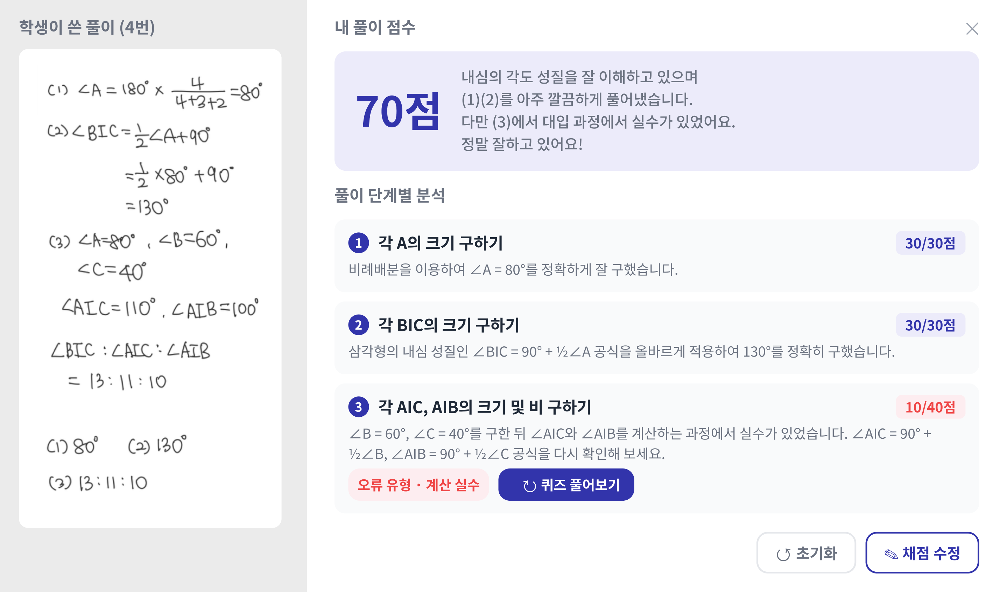

압도적 시간 단축
선생님의 1분 1초도 소중해요
선생님은 문제만 출제하세요.
AI가 자동 채점부터 풀이 분석과 첨삭까지 끝내 놓을게요.
선생님
AI 서술형 첨삭
출제
답안지
업로드
업로드
채점
풀이
분석
분석
첨삭
문제는 내신 빈출 문항 위주로 생성 할 수 있어요
AI 답안 상세 분석
풀이 과정 전체를 분석해요
학생 답안을 업로드만 해주세요.
풀이 흐름에 따라 부분 채점, 오답 유형까지 분석해 드려요.
부분 감점 없는 서술형 만점 훈련이 가능해요.

다인원 원생 채점
30명 채점도 문제 없어요
원생 한 명, 한 명 채점하지 않고
답안지를 업로드만 하면 30명 자동 전송 완료
1인 학원 원장님도, 대형학원 선생님의 고민을 덜어드려요.
OMR 답안지 생성
실제 학교 시험처럼
실전에서 당황하지 않고 풀어야 하니까.
학교 시험지와 같은 학습지와 OMR 답안지를 생성해서
서술형 감각을 키울 수 있어요.
손글씨 답안도 사진 한 장이면 채점돼요
실제 학교 시험 처럼 내신 대비 하세요.
복잡한 건, 매쓰홀릭이 할게요.
AI 서술형 첨삭
가장 먼저 경험해 보세요
아래 베타 버전 체험 신청서 작성 후 입력해 주시면
확인 후 개별 안내 드리고 있습니다.